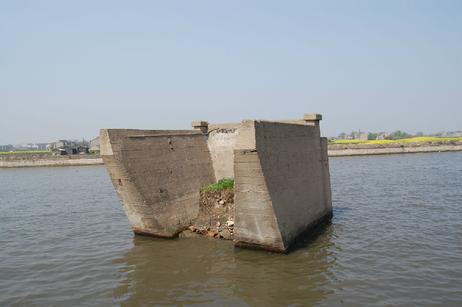

嘉兴市文物保护网 · 市级文物保护点 · 2020-11-03 · 原文

苏嘉铁路嘉兴段起于王江泾镇北荷村与长虹村靠运河的交界处，后向南沿大运河经过王江泾镇长虹村、太平村，油车港镇上睦村、马厍村，进入嘉兴市区沿东方路穿过塘汇街道，终点到达解放街道嘉兴火车站。苏嘉铁路的建设构想最早提出于清末。1932年“一?二八”凇沪抗战后，《凇沪停战协定》规定中国军队调动不可经过上海。为使南北军事活动正常进行，抵御日军进一步侵略，国民政府于1934年初决定兴建苏嘉铁路。1935年2月开工，1936年7月15日正式通车。1937年“八?一三”抗战爆发后，苏嘉铁路成为联系前线、后方的最重要交通线，肩负起抗战军运的大量任务。11月19日，苏州、嘉兴沦陷，铁路沦入敌手。在日寇占领期间，铁路被“华中铁道株式会社”霸占。1944年，日军败局已定，为搜刮金属制造武器，于当年3月开始拆除铁路。1945年初，除路基、涵洞、桥墩外，铁路被拆除殆尽。苏嘉铁路存续时间仅为9年。现存遗迹主体为王江泾镇北荷村的76号桥桥墩及其延伸处残存长约700米的沿河铁路路基；另存，市区东方路93号桥墩位于塘汇街道东方路公路桥旁，仅剩两个桥墩；东方路97号旱桥位于东方路东方桥下东侧，俗称“洋桥洞”，为钢筋水泥旱桥，桥纵剖面呈梯形。苏嘉铁路作为日本侵华战争的重要历史遗物，对于研究中国抗日战争史和交通史具有较高的历史和科学价值。2009年公布为嘉兴市文物保护点。